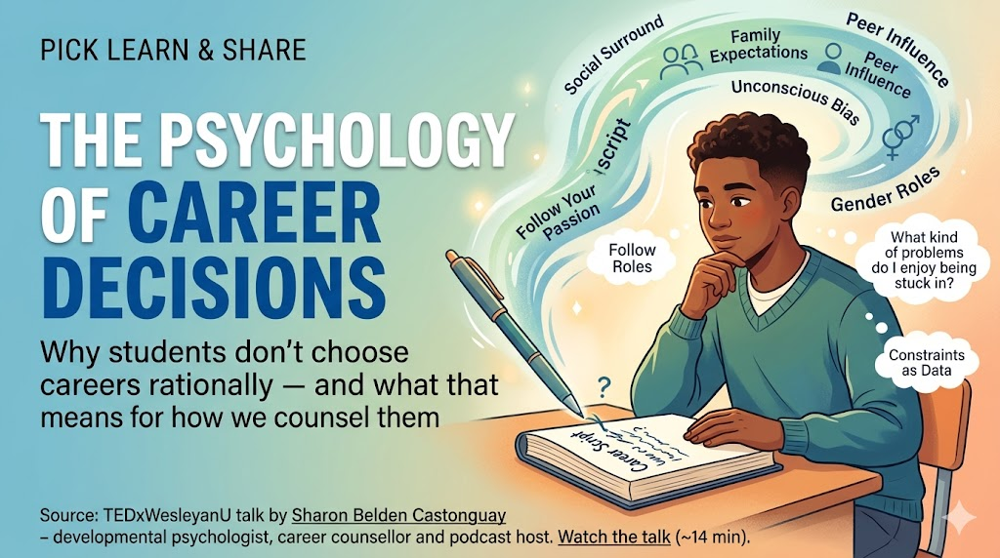

The Psychology of Career Decisions: Why Students Don't Choose Careers Rationally

"The Psychology of Career Decisions" — TEDxWesleyanU by Sharon Belden Castonguay (~14 min)
Sharon Belden Castonguay is a developmental psychologist, career counsellor, and podcast host.
A career is not a calculation to be solved or a passion to be discovered — it is a script the student has been handed, and our work is to help them read it, question it, and rewrite it consciously. This is the central argument of Sharon Belden Castonguay's TEDx talk, and it reframes what career counselling is actually for.
Section 1: What the Talk Is About
Castonguay opens with a personal loss — a knee injury ending her running, and with it the identity of 'runner'. Her point: our personal identities quietly shape our professional ones. We each carry many identities at once, and they are constantly in flux.
She anchors the talk in a hard statistic: Gallup finds 87% of employees worldwide are not engaged in their work. Most researchers blame external factors — office culture, wages. As a career counsellor, she is more interested in the internal cause: why a person chose that line of work in the first place.
The history is instructive. For most of human history, work was prescribed by birth, gender, and class. The first career office opened in 1908; the World Wars built a testing industry; the digital age then sold us the 'follow your passion' paradigm. Each era, she argues, missed the real variable — self-knowledge.
Section 2: The Big Ideas — In Depth
2.1 'Follow Your Passion' Is Incomplete Advice
The famous counselling 'win' — the reluctant client who 'liked gorillas' and was sent to work at a zoo — collapses under scrutiny. Three problems:
- Most people have no idea what their passions are
- Real constraints (the indebted graduate who needs a paycheck, not a calling) don't disappear
- In a world where no one knows what jobs will exist in 5–10 years, passion is a fragile compass
Retire "What are you passionate about?" as an opening question — it produces guilt in students who can't answer it.
Ask instead: "What kind of problems do you enjoy being stuck in?" and "What does a good day look like, hour by hour?"
Treat constraints (cost, family expectation, marks) as data to design around — not obstacles to wish away.
2.2 Career Decisions Are Mostly Irrational
Behavioural economics shows we are far less rational than we assume — we overspend today and under-save for retirement. Career choices run on the same faulty wiring.
Her clearest example: a distraught law student, locked out of high-paying jobs by poor grades, who admitted she never liked law. Why had she chosen it? "Because I didn't want to go to medical school." The decision was made by elimination and inherited expectation — never by reflection. Most stated reasons are rationalisations laid over an unexamined choice.
When a student names a goal, ask "What made you decide that?" — then ask "and before that?" until the true driver appears.
Listen for decisions framed as negatives ("I don't want…") — they often hide a choice never actively made.
Normalise that a first choice can be wrong; the cost of an unexamined choice compounds over years.
2.3 The Social Surround Writes the First Draft
Students don't choose from the full menu of options. They absorb unconscious bias from parents, peers, local community, and national culture — especially around gender, race, religion, and socioeconomic status — and then embrace or foreclose options based on the barriers they expect to face. Many barriers are real; that is precisely why naming them matters.
Assume every student is choosing from the menu they believe is open to "someone like me". Your job is to widen that menu.
Name foreclosure gently: "Is that not for you — or not for someone from where you're from?"
Watch your own assumptions too: the same bias that limits a student can quietly shape the advice we give them.
2.4 Design Thinking Helps — But Needs Self-Awareness First
One promising framework borrows from design thinking: get to know the person, define the problem, prototype, test, iterate — trying on many possible selves rather than foreclosing early. The catch Castonguay names directly: most people lack the self-awareness to do this well. People rarely figure out who they are before deciding what they want to be.
2.5 Identity Is a Script, Not an Equation
She rejects the tidy idea that identity is a sum of variables you could compute. A better metaphor is a script: a deeply personal life-and-career narrative that tells the story of who we are and guides our decisions. The work is not to follow the script to the letter, nor to let others write it — but to understand it and question it.
This is why, she argues, we cannot hand career decisions to an algorithm in the AI age: a script is personal, iterative, and — like any draft — messy.
"Own your story, and don't let others write it for you."
She closes with Cicero — knowing yourself is the most difficult problem in the world.
Section 3: At a Glance
| The Idea | What the Talk Says | In Our Counselling Room |
|---|---|---|
| Engagement is an inside job | 87% of employees worldwide are disengaged; the deeper cause is internal — why the work was chosen at all. | Good early counselling is preventive: a conscious choice today guards against a disengaged career later. |
| Passion is a weak compass | Most people can't name a passion; debt, paychecks and an unknown job market make 'follow your passion' fragile. | Replace "What are you passionate about?" with questions about fit, process, and self-knowledge. |
| Decisions are largely irrational | Like money choices, career choices run on bias and elimination — "law because I didn't want medicine." | Always ask "What made you decide that?" — then ask again until the real driver surfaces. |
| The social surround writes the first draft | Parents, peers, and culture plant unconscious bias; students foreclose options based on barriers they anticipate. | A student chooses from the menu they think is open to "someone like me". Widen the menu; name the foreclosure. |
| Identity is a script, not an equation | You can't compute a career. Identity is a living, messy narrative — to be understood and then questioned. | Our core deliverable is self-awareness; our method is narrative — help students own and edit their story. |
Section 4: Why It Matters in Our Practice
This talk reframes the counsellor's job. We are not matchmakers running a student through an aptitude test and pairing them to a course. We are editors of a narrative — helping a young person see the script they inherited, decide which lines are truly theirs, and rewrite the rest.
Self-awareness does double duty, and both matter to us:
For the student now — it stops them internalising the biases handed down by family, peers, and culture, and choosing by elimination.
For the student later — the same skill keeps them from making false assumptions about others when they grow into people who hire, lead, and mentor.
For us — it is a mirror: the unexamined bias that narrows a student's menu can just as easily narrow the advice we offer.
Practically: it justifies spending counselling time on reflection before recommendation, treats a wrong first choice as a normal iteration rather than a failure, and gives us language — 'your script' — that students find far less intimidating than 'your identity' or 'your purpose'.
Section 5: Bring It to Students (Grades 9–12)
The 'script' metaphor travels well into the classroom and into Subject Choices Day. Three ready activities:
Activity 1 · Map the Many Selves
- Students list 8–10 identities they hold (sibling, athlete, the 'maths one', their town, their faith…).
- They circle the ones that most shape what they think they 'should' become — then ask: who handed me this one?
Activity 2 · "What Made You Decide That?"
- In pairs, students interview each other about a recent choice, asking "What made you decide that?" five times.
- The goal is to feel the difference between a reason they own and one they inherited.
Activity 3 · The Personal Statement IS the Script
- Frame the UCAS / Common App personal statement as 'owning your story' — not performing one for admissions officers.
- On Subject Choices Day, watch for foreclosure: "People from here don't do that", "That's not for girls", "My family expects medicine."
Three Questions for Your Next Student Session
- When this student names a goal, do I ask what made them decide it — or do I move straight to matching it?
- Whose voice is in this choice — the student's, a parent's, a peer group's, or 'people from around here'?
- Have I widened the menu, or quietly confirmed the one they walked in with?
Our job is not to pick the line of work. It is to help the student understand the script — and pick up the pen.
Reference: "The Psychology of Career Decisions" — Sharon Belden Castonguay | TEDxWesleyanU (~14 min)